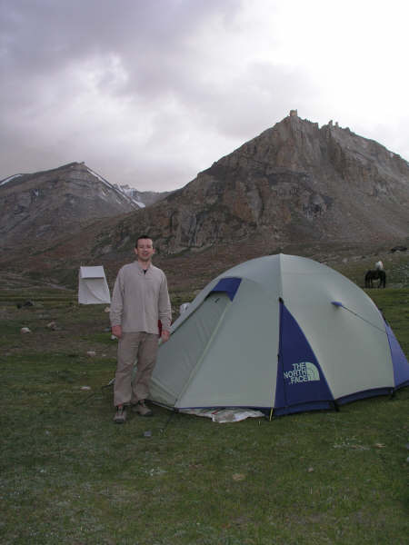
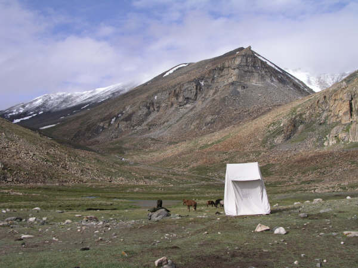
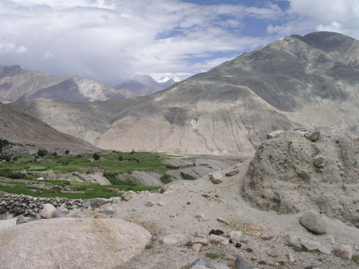
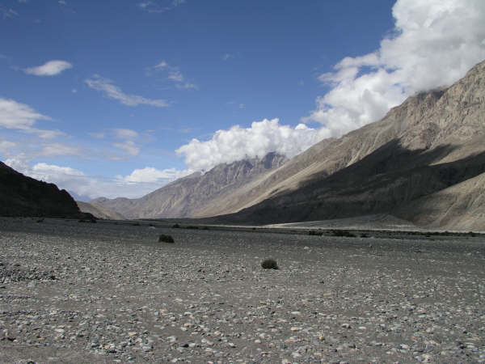
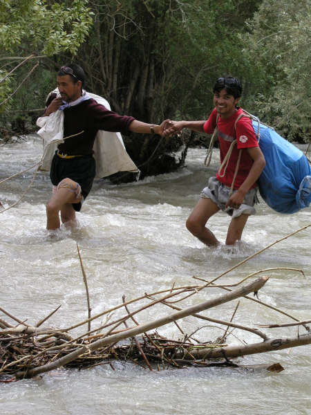
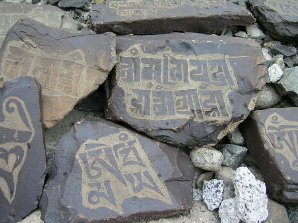
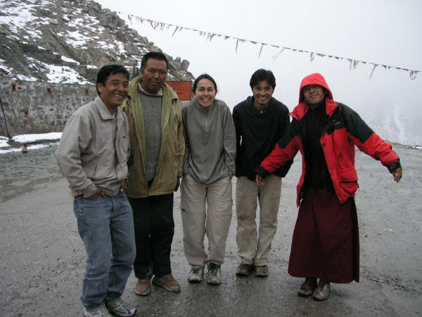

Gasping for breath II: A little bit too much adventure
Nubra Valley, Ladakh, India
On the third day of our Nubra Valley trek we are woken by Tashi with the usual, " Sue... Nathan... bed tea." I rustle out of my sleeping bag, unzip the tent door and tuck into my boiling hot cup of morning chai. We are up and packing our gear when Tashi appears again with two bowls full of hot water for our morning wash and half an hour later, our guide, Dorjey (or Lama-ji as we all call him as he is a monk) has taken the decision that we're ditching the dining tent this morning for an al-fresco breakfast.
So, we sit around the table eating piping hot porridge with our down jackets on, our woolly hats keeping our ears warm and our gloved hands struggling with the spoons! The thermometer tells us it is 1 degree C. During the next course of pancake and honey the sun slowly begins to rise over Diggar mountain to our left and illuminating the vast Stok range behind us. Absolutely breath-taking views, but then most things are breathtaking at 4,600m!
Today is the big day of our trek - we are to ascend Diggar La - a pass which takes us up to 5,300m. Diggar was staring intimidatingly down at us at our breakfast table. But, even though our cook (Ram's) breakfasts are enormous we couldn't put off the inevitable any longer and started out. We usually find the first hour of the day pretty tough as the muscles seem to take rather a long time to warm up at this altitude (although we are very good and do lots of pre (and post) trek stretching!) The zig-zag path upwards gave us more and more amazing views which we admired during our regular breaks - and as we got closer to the top these stops "to admire the view" became increasingly more frequent. All worth it though for the sense of jubilation we felt sitting amongst the fluttering prayer flags at the pass with a glacier directly behind us. Strangely, just before the pass, we had somehow come into mobile phone range and Lama-ji passed the phone to us - it was Namgial (the guy who has organised all of this for us) calling to see how we were getting on!
All went well over the next few days of trekking - the walking was amazing, the camping was fun - and every afternoon bought a new and beautiful place to camp and a slap-up meal rounded off with another one of Ram's cakes (Ram's dessert repertoire was possibly the most amazing thing about the whole trip!!)
But, on day six our peaceful trekking trip started to turn into an adventure - the type that our itinerary hadn't mentioned. Day six was supposed to be our last day of trekking. We were due to meet our taxi at noon after an easy morning's walk, but it didn't show up and so we walked on a further hour and met up with Ram and Tashi who were sitting amongst all the gear as the horseman and five ponies had already set off back to Leh. Still no taxi, so we decided to set up camp for another night whilst Lama-ji went ahead to find out what was going on. He returned 2.5 hours later on a bicycle he had appropriated from a small boy for 20 rupees with news that there had been a landslide and so the taxi had not been able to get through.
After a stormy night in which the dining tent and toilet tent (yes - this is REAL luxury camping!) got flattened (the former with Lama-ji and Tashi in it!) three guys arrived to carry all our gear on their heads past the landslide. When we got there it became glaringly obvious why the taxi hadn't been able to get through - the road had literally been swept away in three places and a river had appeared where there had been only trees and fields a couple of days before. The five of us tied ourselves together and slowly negotiated the icy fast-flowing waters. Our taxi-driver (yet another Dorjey) who was waiting on the other side helped us a lot and kept us smiling as he waded in to help loudly singing with a huge smile on his lips! Soon, we were all in the taxi laughing and chatting about who was the most scared.
Next morning the plan was the set off early from our campsite in Hunder, see some local monasteries and then head back to Leh - but mother nature had other plans in store for us. Not 5km out of Hunder we hit a roadblock. Last night, whilst we were sitting around a table enjoying beer and one of Ram's best chocolate cakes yet - a mudslide was making its way down the mountain and settling on the next village, taking with it the road and filling the houses with mud. It took the best part of the day for the road to be cleared by a JCB, ordered around by five very senior soldiers (there are thousands of soldiers up here as we were only about 50km from the border of Pakistan and not much further from the Chinese one!) and watched by another 200 or so soldiers who ran off the minute it started to rain. Late afternoon the Big Cheese waved us through, but no sooner had we started than we were stuck in the mud and an army lorry was pulling us out.
Again we were on our way, but things just seemed to go from bad to worse. Another landslide meant we had to take a detour across the sand below - the very sand below that we could see a bus stuck in. We made it thanks to Dorjay's skillful driving and headed on to Khalsar which was horribly flooded. There were people sitting outside their homes and businesses surrounded by the belongings they had managed to rescue and looking completely blank. In Khalsar we got the bad news - the road leading back to Leh was blocked and we'd probably have to camp out for another night at a village called Khardung - so we bought some kerosene and some provisions and set off again to see how far we could get.
A little further and we met another on-coming vehicle that told us the road to Leh had been cleared - we all cheered and were on our way again. Another 12 landslides later with the rain bucketing down and each one of us getting more and more worried about more landslides and the dangers of travelling on the world's highest motorable road in such conditions we reached Khardungla - the pass at 5400m - and it was snowing hard. Lama-ji insisted we all get out and have the essential photo taken even though it was freezing (it's attached and you'll see from our faces just HOW cold it was!)
After the pass, it got dark and foggy and there were landslides of either clay or rocks every 500m or so. Every rumble set us quaking in our boots and then we came to an obstacle that was impossible to negotiate. Someone had abandoned their jeep in the middle of the road, stuck deep in the mud. Lama-ji called Namgial and he came to the only decision that one could come to - we had to walk the next 8km in the pitch dark until we could meet him in another jeep. So, walk we did... in the dark, through clay, over rocks, down a couple of VERY scary shortcuts ... all not on the itinerary - until we reached Namgial who was waiting with lots of cakes and water. In the car on the way back to Leh we all agreed with Ram's comment, "Today... maybe a little bit too much adventure!"
So, we sit around the table eating piping hot porridge with our down jackets on, our woolly hats keeping our ears warm and our gloved hands struggling with the spoons! The thermometer tells us it is 1 degree C. During the next course of pancake and honey the sun slowly begins to rise over Diggar mountain to our left and illuminating the vast Stok range behind us. Absolutely breath-taking views, but then most things are breathtaking at 4,600m!
Today is the big day of our trek - we are to ascend Diggar La - a pass which takes us up to 5,300m. Diggar was staring intimidatingly down at us at our breakfast table. But, even though our cook (Ram's) breakfasts are enormous we couldn't put off the inevitable any longer and started out. We usually find the first hour of the day pretty tough as the muscles seem to take rather a long time to warm up at this altitude (although we are very good and do lots of pre (and post) trek stretching!) The zig-zag path upwards gave us more and more amazing views which we admired during our regular breaks - and as we got closer to the top these stops "to admire the view" became increasingly more frequent. All worth it though for the sense of jubilation we felt sitting amongst the fluttering prayer flags at the pass with a glacier directly behind us. Strangely, just before the pass, we had somehow come into mobile phone range and Lama-ji passed the phone to us - it was Namgial (the guy who has organised all of this for us) calling to see how we were getting on!
All went well over the next few days of trekking - the walking was amazing, the camping was fun - and every afternoon bought a new and beautiful place to camp and a slap-up meal rounded off with another one of Ram's cakes (Ram's dessert repertoire was possibly the most amazing thing about the whole trip!!)
But, on day six our peaceful trekking trip started to turn into an adventure - the type that our itinerary hadn't mentioned. Day six was supposed to be our last day of trekking. We were due to meet our taxi at noon after an easy morning's walk, but it didn't show up and so we walked on a further hour and met up with Ram and Tashi who were sitting amongst all the gear as the horseman and five ponies had already set off back to Leh. Still no taxi, so we decided to set up camp for another night whilst Lama-ji went ahead to find out what was going on. He returned 2.5 hours later on a bicycle he had appropriated from a small boy for 20 rupees with news that there had been a landslide and so the taxi had not been able to get through.
After a stormy night in which the dining tent and toilet tent (yes - this is REAL luxury camping!) got flattened (the former with Lama-ji and Tashi in it!) three guys arrived to carry all our gear on their heads past the landslide. When we got there it became glaringly obvious why the taxi hadn't been able to get through - the road had literally been swept away in three places and a river had appeared where there had been only trees and fields a couple of days before. The five of us tied ourselves together and slowly negotiated the icy fast-flowing waters. Our taxi-driver (yet another Dorjey) who was waiting on the other side helped us a lot and kept us smiling as he waded in to help loudly singing with a huge smile on his lips! Soon, we were all in the taxi laughing and chatting about who was the most scared.
Next morning the plan was the set off early from our campsite in Hunder, see some local monasteries and then head back to Leh - but mother nature had other plans in store for us. Not 5km out of Hunder we hit a roadblock. Last night, whilst we were sitting around a table enjoying beer and one of Ram's best chocolate cakes yet - a mudslide was making its way down the mountain and settling on the next village, taking with it the road and filling the houses with mud. It took the best part of the day for the road to be cleared by a JCB, ordered around by five very senior soldiers (there are thousands of soldiers up here as we were only about 50km from the border of Pakistan and not much further from the Chinese one!) and watched by another 200 or so soldiers who ran off the minute it started to rain. Late afternoon the Big Cheese waved us through, but no sooner had we started than we were stuck in the mud and an army lorry was pulling us out.
Again we were on our way, but things just seemed to go from bad to worse. Another landslide meant we had to take a detour across the sand below - the very sand below that we could see a bus stuck in. We made it thanks to Dorjay's skillful driving and headed on to Khalsar which was horribly flooded. There were people sitting outside their homes and businesses surrounded by the belongings they had managed to rescue and looking completely blank. In Khalsar we got the bad news - the road leading back to Leh was blocked and we'd probably have to camp out for another night at a village called Khardung - so we bought some kerosene and some provisions and set off again to see how far we could get.
A little further and we met another on-coming vehicle that told us the road to Leh had been cleared - we all cheered and were on our way again. Another 12 landslides later with the rain bucketing down and each one of us getting more and more worried about more landslides and the dangers of travelling on the world's highest motorable road in such conditions we reached Khardungla - the pass at 5400m - and it was snowing hard. Lama-ji insisted we all get out and have the essential photo taken even though it was freezing (it's attached and you'll see from our faces just HOW cold it was!)
After the pass, it got dark and foggy and there were landslides of either clay or rocks every 500m or so. Every rumble set us quaking in our boots and then we came to an obstacle that was impossible to negotiate. Someone had abandoned their jeep in the middle of the road, stuck deep in the mud. Lama-ji called Namgial and he came to the only decision that one could come to - we had to walk the next 8km in the pitch dark until we could meet him in another jeep. So, walk we did... in the dark, through clay, over rocks, down a couple of VERY scary shortcuts ... all not on the itinerary - until we reached Namgial who was waiting with lots of cakes and water. In the car on the way back to Leh we all agreed with Ram's comment, "Today... maybe a little bit too much adventure!"

Diggar La - our highest pass yet!

Our luxury tent at Diggar Lhartse

The most picturesque toilet tent

View of Nubra Valley just before Agham village

This is where we were stuck for a night - not bad huh?

Lama-ji and Tashi crossing where once there had been a road

Mani wall at Hunder

The team at Khardungla (from the left Ram, Dorjee (driver), Sue, Tashi and Lama-ji